The Sanctuary App is a leader in the astrology and mystical app space, where users can get psychic readings, tarot card readings, and personalized horoscopes from a real expert.
My Role
Lead UX/UI Design
Client
Sanctuary Ventures
Timeline
18 Months
Team
Isaiah Robinson (me)
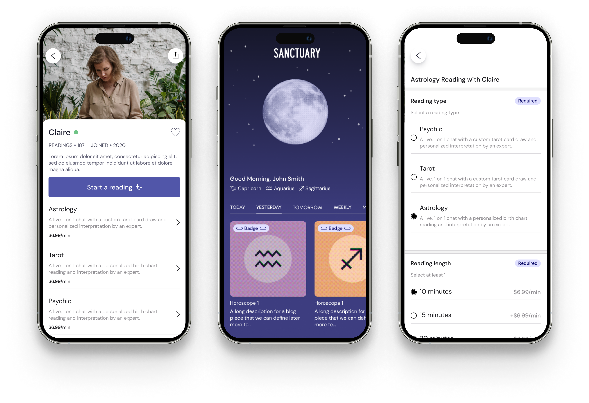
The Challenge
From an experiential perspective, customers return to Sanctuary due to its enduring and straightforward core offering that has remained unchanged since 2019. Despite having a strong foundation for this core experience, the Sanctuary app's interface required reconstruction, as it lacked a comprehensive design system for its foundational elements and components.
Our Goals
In my role as the Lead Designer, I set an objective to create the first comprehensive design system for the Sanctuary app. This initiative produced remarkable results, with conversions increasing by more than 120% within a single month. My redesign encompassed the following key elements:
Understanding the leadership app's vision and conducting a thorough evaluation of the existing app experience
Analyzing the essential components required for the design system
Performing a competitive analysis and identifying benchmark "north star" experiences
Formulating a cohesive design language that includes foundational elements such as typography, color schemes, and layout principles, along with a diverse range of components such as buttons, cards, and input fields
Understanding App Vision
When I joined the Sanctuary team, my initial step was to connect with the lead product owners and other stakeholders. This enabled me to delve deeper into the long-term vision of the Sanctuary app and understand how design could contribute to its realization. Through these collaborative dialogues, I gained three significant insights that guided my approach.
Crafting a cohesive design system for Sanctuary that guarantees uniformity across all aspects.
Constructing versatile components that seamlessly adapt to various forms of in-app content.
Collaborating closely with Creative Directors to ensure the newly minted Sanctuary design system aligns with the established brand standards.
During initial discussions, I engaged with Lead Product Owners to gain deeper insights into their vision for the Sanctuary App. To spark the creative process, the product owners presented wireframe versions inspired by existing content apps. These served as initial reference points for the design exploration.
Developing the system
To create the Sanctuary Design System from scratch, my primary action points included:
Conduct current app audit to identify opportunities for improvement
Drawing inspiration from north star experiences offered by both direct and indirect competitors. .
Identifying essential components and foundational elements crucial for shaping the desired user experience
Conduct current app audit to identify opportunities for improvement
Drawing inspiration from north star experiences offered by both direct and indirect competitors.
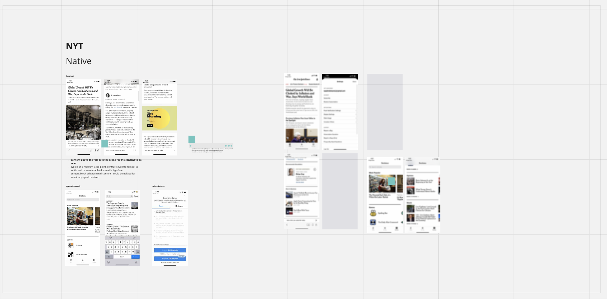
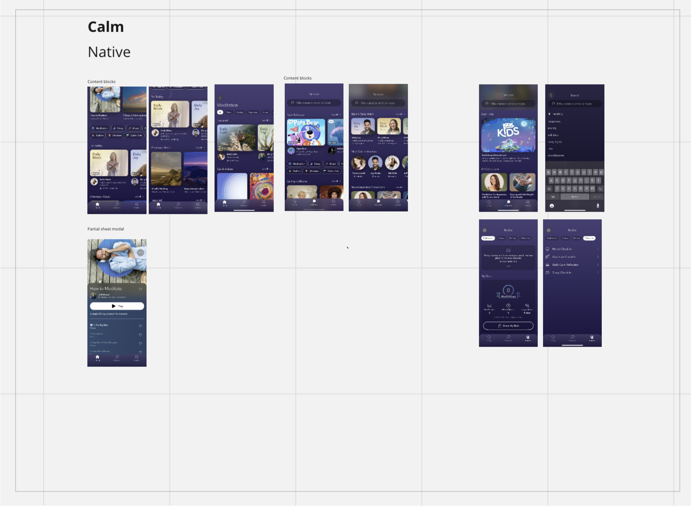
Identifying essential components and foundational elements that are crucial for shaping the desired user experience.
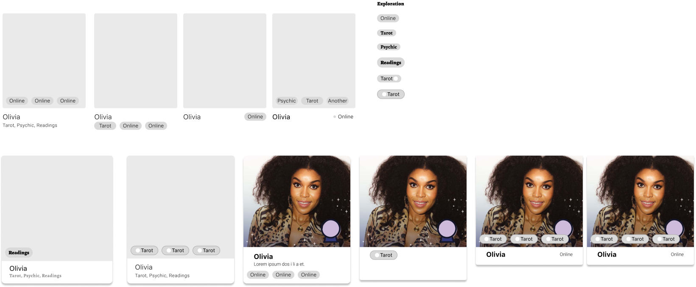
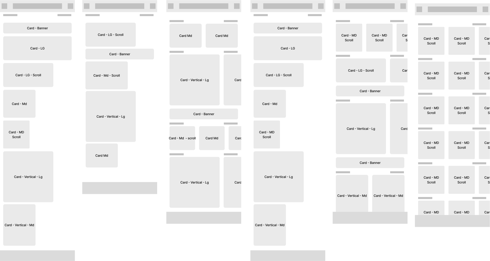
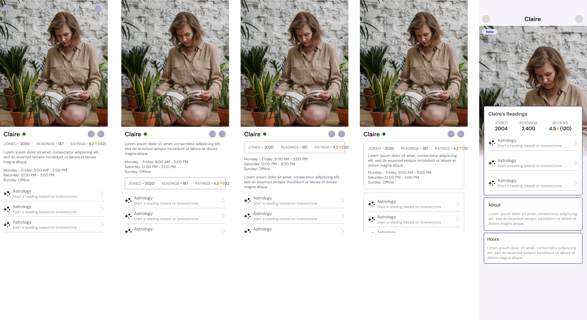
Sanctuary Design System
The Sanctuary Design System is an evolving framework that encompasses typography, components, and color systems to be used throughout the Sanctuary native app and website.
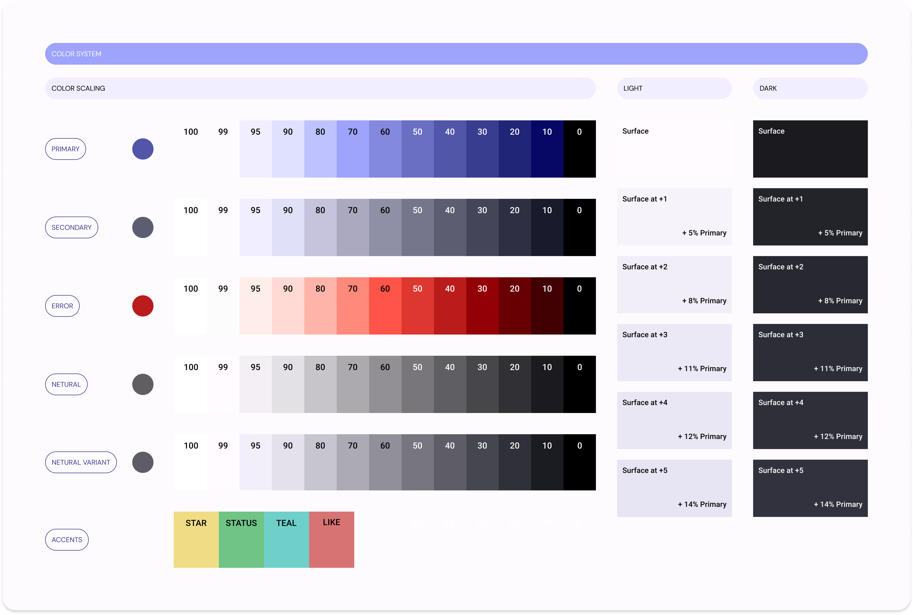
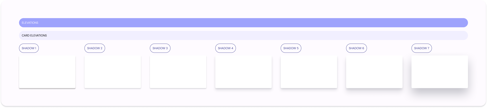
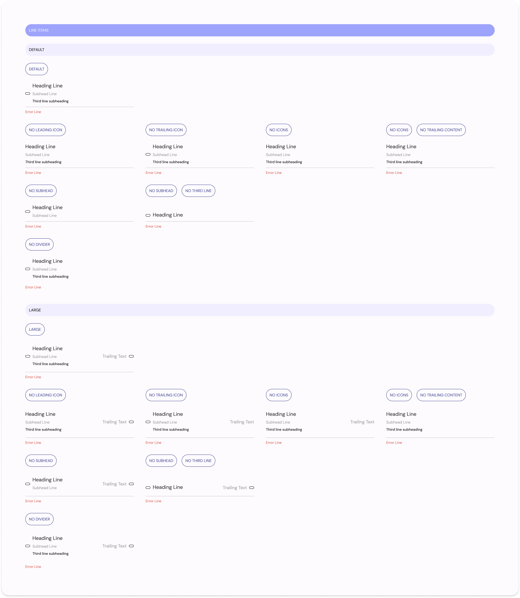
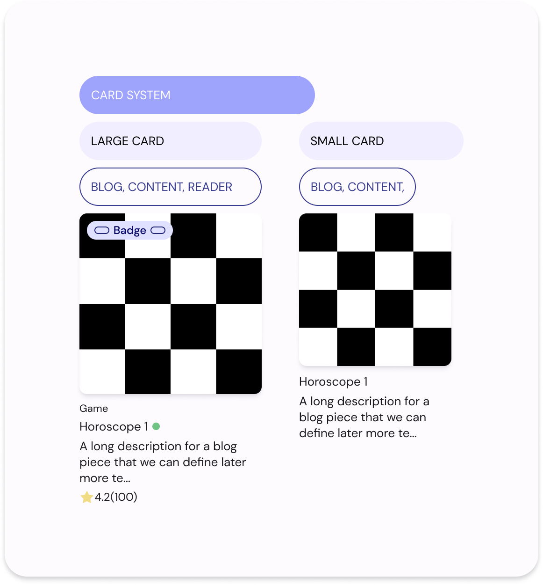
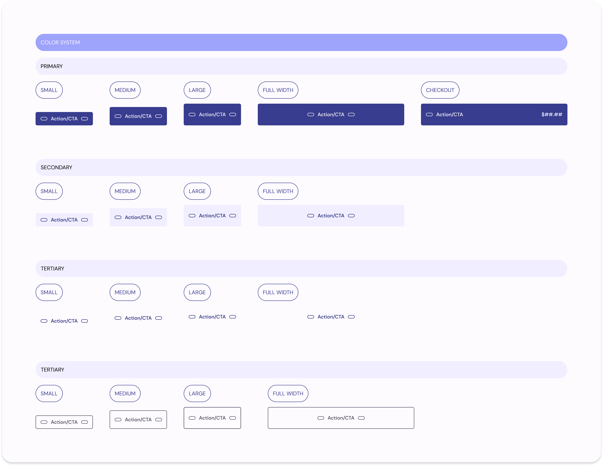
Redesign Examples
With defined design rule sets and components, I began the redesign of the Sanctuary app Homescreen experience, Reader Profile, buy flows, chat system and and content management system. Below are before and after excerpts of the redesign.
Homepage Redesign
The redesign of the sanctuary homepage included a rethinking of the entry, content layout, and UI elements, including:
Dynamic moon phase image, based on the moon phase
Addition of daily, weekly, monthly, and annual content
Implementation of a card system for all content (readers, horoscopes, and crystals)
Old Homepage
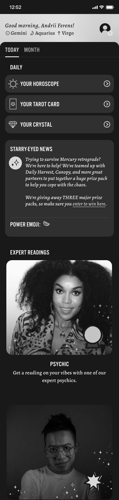
Redesigned Homepage
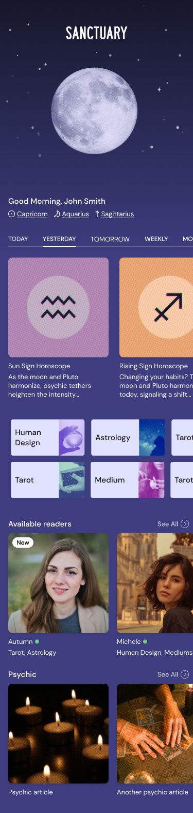
Reader Profile Redesign
The redesign of a reader's profile page included a redesigned layout of all content, including:
Large profile image in the top spot
Restructuring of reader profile content
Redesigned entry points for users to start a reading
Old Reader Profile
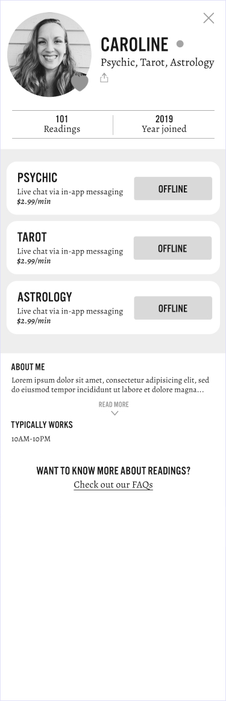
Redesigned Reader Profile
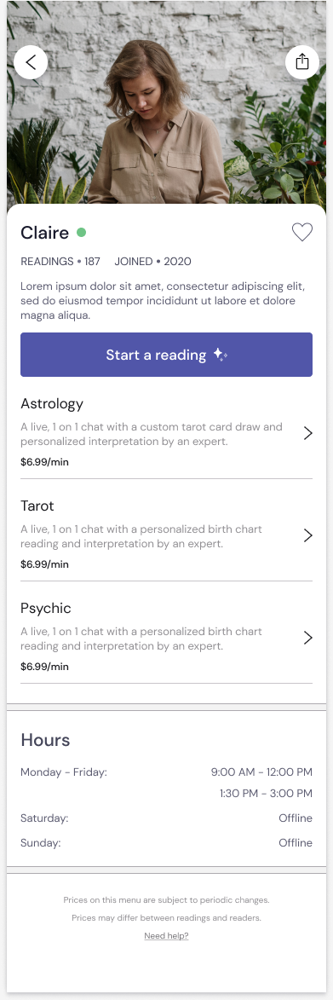
Reader Tab Redesign
The redesign of the reader tab included a rearranging of all content, including:
Utilization of a card system for readers
AI system for readers based on reading type
Introduction of elements to categorize readers (e.g., new) and units to highlight sales and offerings
Old Reader Tab
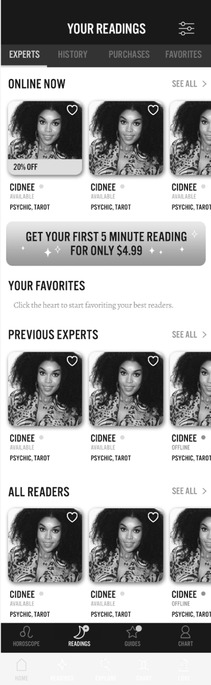
Redesigned Reader Tab
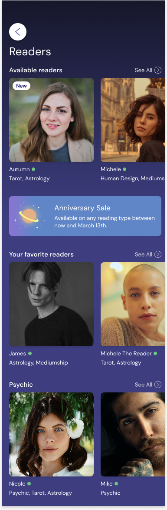
Reading Checkout Redesign
The redesign of the reading buy flow introduced new content and components, including:
Rethinking of the SKU journey from an overlay modal to a new screen
Creating individual sections for new SKU content
Utilizing design system components to create a dynamic SKU page based on user selections
Old Reader Tab
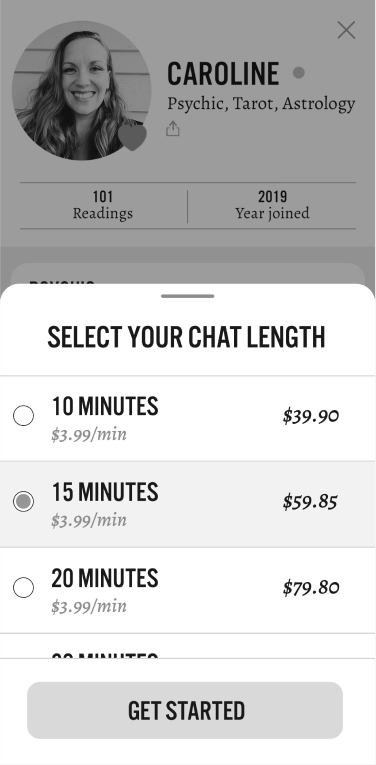
Redesigned Reader Tab
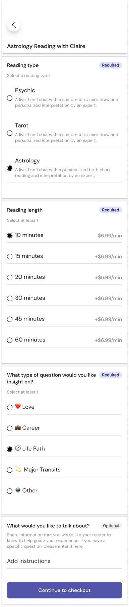
Let's Chat
Shoot me a message or reach out to me on social media!